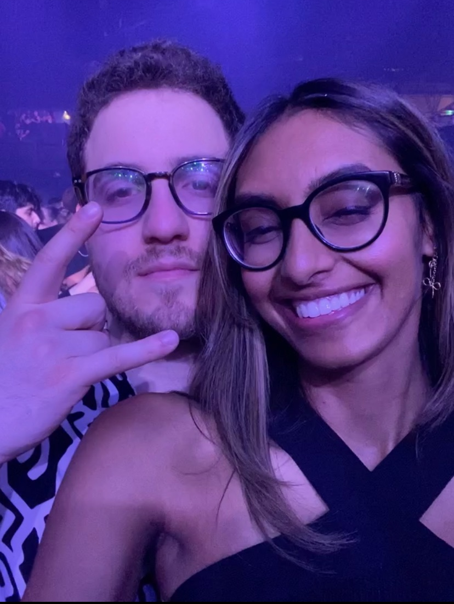
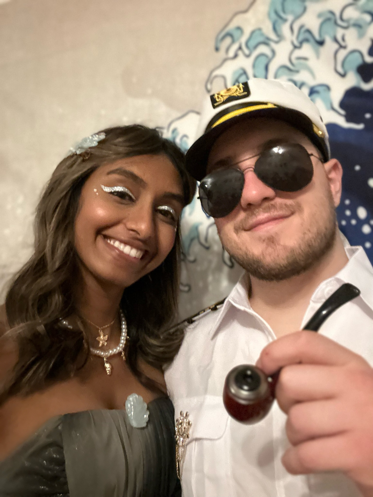
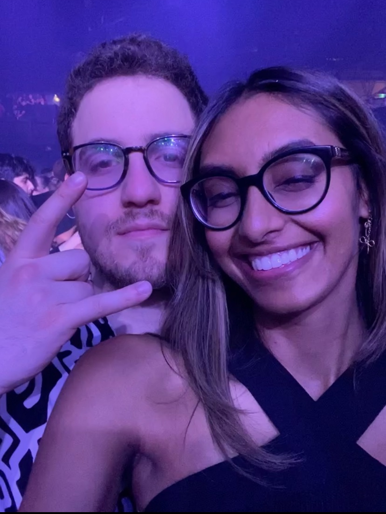
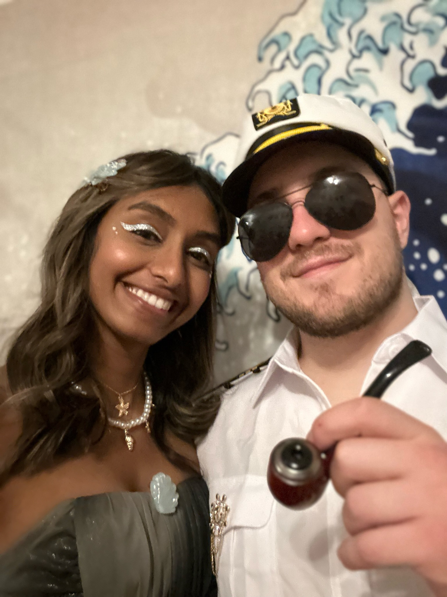
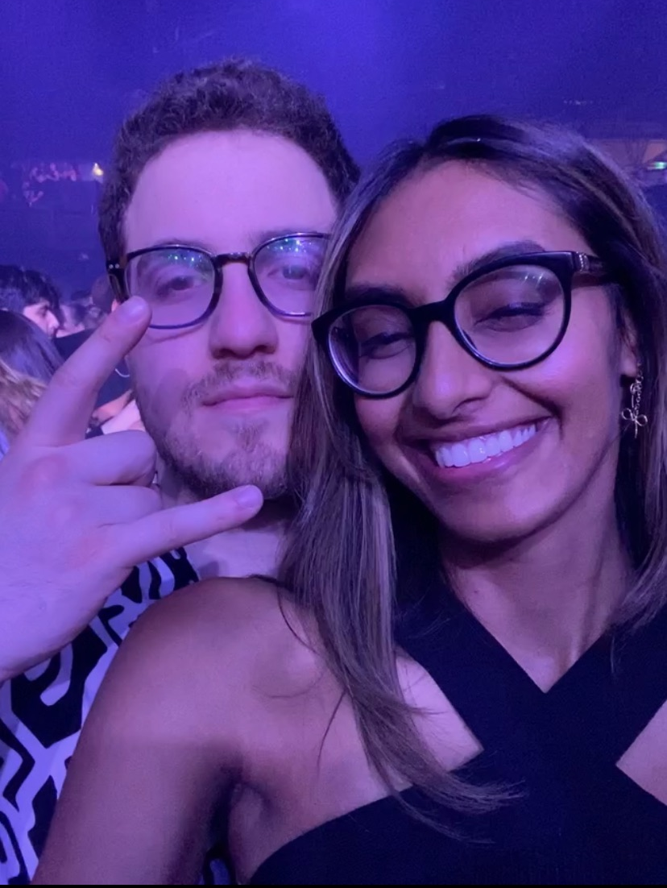
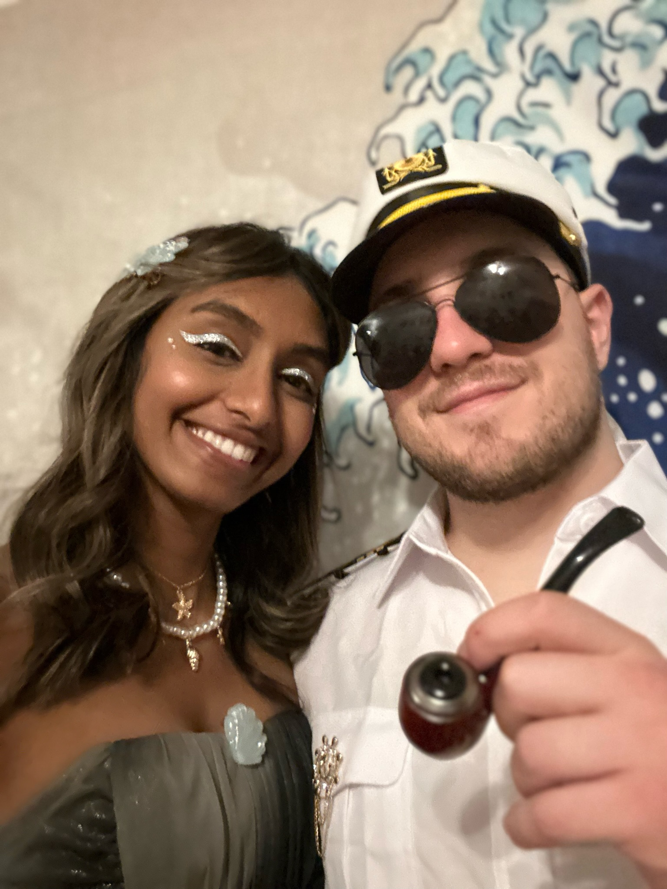

Rojee, you're a lovely person inside and out with many great qualities.
You're caring, silly, smart and beautiful to name a few.
We've shared many great memories; fun adventures, great conversations and lots of cozy time doing nothing.
Our personalities positively interact with one another in a handful of ways.
We have no doubt had our fair share of issues lately and it has been emotionally exhausting for both of us.
That being said, after thinking about us, what has been and what could be,
I am not satisfied with the answer that we are simply not compatible or looking for different things.
I don't believe this is what drove us apart.
Successful relationships are characterized by mutual respect, effective communication, trust & empathy.
Both partners have to work as a team, openly communicating needs, while listening to and responding to the needs of their partner.
With healthy communication and patience, we can give each other the opportunity to learn and grow as humans and as partners.
This fosters an environment that minimizes issues and manages conflict resolution in a healthy way.
This type of equal and caring partnership allows each person to blossom into their best and happiest self.


I have my flaws and you have given me constructive feedback that I have taken to heart.
You have brought things into my awareness and helped me understand how I have, at times, negatively affected you.
I need to work on myself, manage difficult emotions in a healthy way and and not let my stress and frustration affect those around me.
I need to, at times, be more patient and understanding.
I need to be more assertive and set boundaries when necessary.
Among other things, I am happy to look into therapy as well as getting my driver's license.
I understand I have things I can work on as a person and as a partner that would positively impact myself and our dynamic.